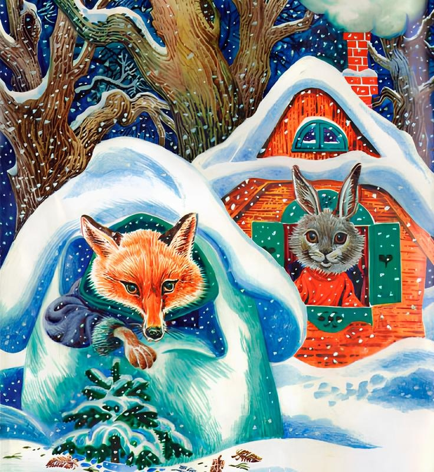

Лиса и Заяц.

Жил-был на поле серенький Зайчик, да жила Лисичка-сестричка.
Вот как пришли заморозки, стал Зайка линять, а как пришла зима студёная, со вьюгой да со снежными сугробами, Зайка с холоду и вовсе побелел, и надумал он себе избу строить. Натаскал лубочков и давай городить хижину.
Увидала это Лиска и говорит:
— Ты, косенький, что это делаешь?
— Видишь, от холоду избу строю.
«Вишь, какой догадливый, — подумала Лиса, — давай-ка и я построю избу — только уж не лубочный домок, а палаты, хрустальный дворец!»
Вот и принялась она лёд таскать да избу класть. Обе избы поспели разом, и зажили наши звери своими домами.
Глядит Лиска в ледяное окошечко да над Зайчиком посмеивается:
— Вишь, чернолапотник, какую лачугу смастерил! То ли дело моя: и чиста, и светла — ни дать ни взять хрустальный дворец!
Лисе зимою всё было хорошо, а как пришла весна по зиму да стала снег сгонять, землю пригревать, тут Лискин дворец и растаял да водою под гору и сбежал.
Как Лиске без дому быть? Вот подкараулила она, когда Зайка вышел из своей избы погулять, подснежной травки, заячьей капустки пощипать, прокралась в Зайчину избу и влезла на полати.
Пришёл Зайчик, торкнулся в дверь — заперта. Подождал маленько и стал стучаться.
— Кто там? — закричала Лиса толстым голосом.
— Это я, хозяин, серый Зайчик, пусти меня, Лисонька.
— Убирайся, не пущу, — отвечала Лиса.
Пообождал Зайка, да и говорит:
— Полно, Лисонька, шутить, пусти, мне уж спать хочется.
А Лиса в ответ:
— Постой, косой, вот как я выскочу, да выпрыгну, да пойду тебя трясти, только клочья по ветру полетят!
Заплакал Зайчик и пошёл, куда глаза глядят. Повстречался ему серый Волк.
— Здорово, Зайка, о чём плачешь, о чём горюешь?
— А как же мне не тужить, не горевать: была у меня изба лубяная, у Лисы ледяная. Лисья изба растаяла, водой ушла, она мою захватила, да и не пускает меня, хозяина!
— А вот постой, — сказал Волк, — мы её выгоним!
— Навряд ли, Волченька, выгоним, она крепко засела!
— Я не я, коли не выгоню Лису! — зарычал Волк.
Вот Зайчик обрадовался и пошёл с Волком гнать Лису.
Пришли.
— Эй, Лиса Патрикеевна, выбирайся из чужой избы! — закричал Волк.
А Лиса ему из избы в ответ:
— Постой, вот как слезу с печи, да выскочу, да выпрыгну, да пойду тебя трепать, так только клочья по ветру полетят!
— Ой-ой, какая сердитая! — заворчал Волк, поджал хвост и убежал в лес, а Зайка остался плакать в поле.
Идёт Бык.
— Здорово, Зайка, о чём тужишь, о чём плачешь?
— А как же мне не тужить, как не горевать: была у меня изба лубяная, у Лисы ледяная. Лисья изба растаяла, она мою захватила, да вот и не пускает меня, хозяина, домой!
— А вот постой, — сказал Бык, — мы её выгоним.
— Нет, Быченька, навряд выгнать её, крепко засела. Уж её Волк гнал — не выгнал, и тебе, Быку, не выгнать.
— Я не я, коли не выгоню, — замычал Бык.
Зайчик обрадовался и пошёл с Быком выживать Лису.
Пришли.
— Эй, Лиса Патрикеевна, ступай вон из чужой избы! — промычал Бык.
А Лиса ему в ответ:
— Постой, вот как слезу я с печи, да пойду тебя, Быка, трепать, так только клочья по ветру полетят!
— Ой-ой, какая сердитая! — замычал Бык, закинул голову и давай улепётывать.
Зайчик сел подле кочки и заплакал.
Вот идёт Мишка Медведь и говорит:
Вы просто подумайте о чем-нибудь хорошем, ваши мысли сделают вас легкими, и вы взлетите.
Питер Пэн
close
— Здорово, косой, о чём тужишь, о чём плачешь?
— А как же мне не тужить, как не горевать: была у меня изба лубяная, а у Лисы ледяная. Лисья изба растаяла, она мою захватила, да и не пускает меня, хозяина, домой!
— А вот постой, — сказал Медведь, — мы её выгоним!
— Нет, Михайла Потапыч, навряд её выгнать, крепко засела. Волк гнал — не выгнал, Бык гнал — не выгнал, и тебе не выгнать!
— Я не я, — заревел Медведь, — коли не выживу Лису!
Вот Зайчик обрадовался и пошёл, подпрыгивая, с Медведем гнать Лису.
Пришли.
— Эй, Лиса Патрикеевна, — заревел Мишка, — убирайся вон из чужой избы.
А Лиса ему в ответ:
— Постой, Михайла Потапыч, вот как слезу с печи, да как выскочу, да выпрыгну, да пойду тебя, косолапого, трепать, так только клочья по ветру полетят!
— У-у-у, какая лютая! — заревел Медведь, да и пустился впритруску бежать.
Как быть Зайцу?
Стал он Лису упрашивать, а Лиса и ухом не ведёт. Вот заплакал Зайчик и пошёл, куда глаза глядят, и повстречал кочета, красного Петуха с саблей на плече.
— Здорово, Зайка, каково поживаешь, о чём тужишь, о чём плачешь?
— А как же мне не тужить, как не горевать, коли с родного пепелища сгоняют? Была у меня избёнка лубяная, а у Лисицы ледяная. Лисья изба растаяла, она мою заняла, да и не пускает меня, хозяина, домой!
— А вот постой, — сказал Петух, — мы её выгоним!
— Вряд ли, Петенька, тебе выгнать, она больно крепко засела! Её Волк гнал — не выгнал, её Бык гнал — не выгнал, Медведь гнал — не выгнал, где уж тебе совладать!
— Попытаемся, — сказал Петушок и пошёл с Зайцем выгонять Лису.
Как пришли они к избушке, то Петух запел:
— Идёт кочет на пятах, Несёт саблю на плечах, Хочет Лиску зарубить, Себе шапку сшить, — Выходи, Лиса, пожалей себя!
Как заслышала Лиса Петухову угрозу, испугалась, да и говорит:
— Подожди, Петушок, золотой гребешок, шёлковая бородка!
А Петух кричит:
— Кукареку, всю изрублю!
Вот Лиса просит тоненьким, масляным голоском:
— Петенька, Петушок, пожалей старые косточки, дай шубёнку накинуть!
А Петух, стоя у дверей, знай себе кричит:
— Идёт кочет на пятах, Несёт саблю на плечах, Хочет Лиску зарубить, Себе шапку сшить, — Выходи, Лиса, пожалей себя!
Нечего делать, некуда деваться Лисе: приотворила дверь, да и выскочила.
А Петух поселился с Зайчиком в его избушке, и стали они жить да быть, да добро копить.
(Илл. Васнецова Ю.)